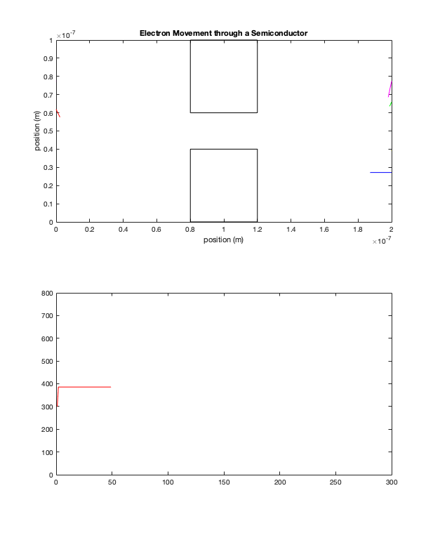

Monte-Carlo Modeling of Electron Transport
ELEC 4700 Assignment 1 Warren Munro - 101058184
Contents
1 Electron Modelling
m_o = 9.109e-31;
m_n = 0.26*m_o;
T = 300;
kb = 1.380649e-23; %J/K
The thermal velocity at 300K was calculated using the following equation.
v_th = sqrt(2*kb*T/m_n);
The thermal veolcity could then be used to calculate the mean free path
tau_mn = 0.2e-12; L_n = v_th*tau_mn;
The boundaries are set to 200nm by 100nm and 1000 particles are given random positions within the limits.
Xsize = 200e-9; Ysize = 100e-9; p_x = rand(1000, 1)*Xsize; p_y = rand(1000, 1)*Ysize;
Particles are given a fixed velocity with random angle.
v_x = zeros(1000, 1); v_y = zeros(1000, 1); theta = rand(1000, 1)*2*pi; v_x = cos(theta).*v_th; v_y = sin(theta).*v_th; line_color = ['r', 'g', 'b', 'c', 'm', 'y', 'k', 'w']; clf figure(1) subplot(2, 1, 1) xlim([0 Xsize]) ylim([0 Ysize]) title('Electron Movement through a Semiconductor') xlabel('position (m)') ylabel('position (m)')
A time step size was selected so that particles can move no more than 1nm per cycle. The simulation will be ran for 1001 time steps.
delta_t = 5.35e-15; time = linspace(0, 1000*delta_t, 1001); T_avg = zeros(1001, 1);
%Particle positions are updated based on their velocity then plotted. After %each update, particle positions are checked to see if they have %encountered a bondary. If a boundary is passed, then it's position will be %corrected so that it interacts correctly with the boundary. for i = 0:1000 Xprev = p_x; Yprev = p_y; d_x = v_x .* delta_t; d_y = v_y .* delta_t; p_x = p_x + d_x; p_y = p_y + d_y; %Check boundary conditions for j = 1:1000 %Horizontal boundaries if p_x(j) < 0 p_x(j) = p_x(j) + Xsize; elseif p_x(j) > Xsize p_x(j) = p_x(j) - Xsize; end %Vertical boundaries if p_y(j) < 0 v_y(j) = -v_y(j); p_y(j) = -p_y(j); elseif p_y(j) > Ysize v_y(j) = -v_y(j); p_y(j) = 2*Ysize-p_y(j); end end %The first ten particles in the array are plotted. subplot(2, 1, 1) hold on for j = 1:14 if abs(p_x(j)-Xprev(j)) <= v_th*delta_t %Only plot displacement if it is within maximum displacement, %otherwise it must have jumped across the horizontal boundary plot([p_x(j),Xprev(j)],[p_y(j),Yprev(j)], 'color', line_color(mod(j,7)+1)) end end hold off %Measure temperature %E_k = 0.5*m*v^2 = 3/2*kb*T v = sqrt(v_x.^2 + v_y.^2); T_measured = (0.5.*m_n.*v.^2)./(kb.*3./2); T_avg(i+1) = mean(T_measured); subplot(2, 1, 2) plot(time(1:i+1), T_avg(1:i+1)) title('Temperature of the Semiconductor') xlabel('Time (s)') ylabel('Temperature (K)') end hold off
Error using matlab.graphics.axis.Axes/get
Operation terminated by the user.
Error in ylabel (line 65)
h = get(ax,'YLabel');
Error in WarrenMC (line 109)
ylabel('Temperature (K)')
%The resulting plots show that the particles are behaving correctly. Particles %reflect off of the vertical limits and pass through the horizontal limits and continue on the same trajectory from the opposite side. The %particles are given a random initial angle and a fixed velocity. Due to %the constant velocity of each particle, the temperature never changes %becuase it is related to the electrom velocity.
2 Collisions with Mean Free Path
%In part 2, the simulation is repeated except for now the particle %velocities will be randomized to a Maxwell-Boltzmann distribution, and %electrons will have a chance to scatter, where their angle and velocity is %randomized again. % The probability of an electron scattering follows the following equation. P_scat = 1 - exp(-delta_t/tau_mn); %Positions are randomized in the same way as before, but now the velocities %are given a random angle and a random velocity instead of being fixed at %v_th. p_x = rand(1000, 1)*Xsize; p_y = rand(1000, 1)*Ysize; theta = rand(1000, 1)*2*pi; v_x = cos(theta).*v_th*randn(); v_y = sin(theta).*v_th*randn(); figure(2) subplot(3, 1, 1) xlim([0 Xsize]) ylim([0 Ysize]) title('Electron Scattering in a Semiconductor') xlabel('position (m)') ylabel('position (m)') for i = 0:1000 Xprev = p_x; Yprev = p_y; for j = 1:1000 if P_scat > rand() %Particle scatters. Give new v_x and v_y v_x(j) = cos(2*pi*rand()).*v_th*randn(); v_y(j) = sin(2*pi*rand()).*v_th*randn(); end end d_x = v_x .* delta_t; d_y = v_y .* delta_t; p_x = p_x + d_x; p_y = p_y + d_y; %Check boundary conditions for j = 1:1000 %Horizontal boundaries if p_x(j) < 0 p_x(j) = p_x(j) + Xsize; elseif p_x(j) > Xsize p_x(j) = p_x(j) - Xsize; end %Vertical boundaries if p_y(j) < 0 v_y(j) = -v_y(j); p_y(j) = -p_y(j); elseif p_y(j) > Ysize v_y(j) = -v_y(j); p_y(j) = 2*Ysize-p_y(j); end end v = sqrt(v_x.^2 + v_y.^2); subplot(3, 1, 3) hist(v, 20); title('Distribution of Electron Velocities') xlabel('Velocity (m/s)') ylabel('Number of Electrons') subplot(3, 1, 1) hold on %plot points for j = 1:14 if abs(p_x(j)-Xprev(j)) <= sqrt(2*(v_th^2))*delta_t %Only plot displacement if it is within maximum displacement, %otherwise it must have jumped across the horizontal boundary plot([p_x(j),Xprev(j)],[p_y(j),Yprev(j)], 'color', line_color(mod(j,7)+1)) end end hold off %Measure temperature %E_k = 0.5*m*v^2 = 3/2*kb*T T_measured = (0.5.*m_n.*v.^2)./(kb.*3./2); T_avg(i+1) = mean(T_measured); subplot(3, 1, 2) plot(time(1:i+1), T_avg(1:i+1)) title('Temperature of the Semiconductor') xlabel('Time (s)') ylabel('Temperature (K)') %pause(0.01) end
%The plots show that the electrons now scatter and randomly change %direction. Due to the changing velocities of the particles, the %temperature now fluctuates. As the temperature plot shows, The temperature %starts off low, then rises to an equilibrium around 200K and fluctuates %around that temperature until the simulation is complete. The histogram %shows that the velocities are in fact in a Maxwell-Boltzmann Distribution.
3 Enhancements
%Part 3 adds a bottleneck boundary to the middle of the region. The %boundary is an insulator, so particles will reflect off of the barriers %upon contact %box coordinates box1_top = 100e-9; box1_bottom = 60e-9; box2_top = 40e-9; box2_bottom = 0e-9; box_left = 80e-9; box_right = 120e-9; top_box = [box_right, box1_bottom; box_right, box1_top; box_left, box1_top; box_left, box1_bottom; box_right, box1_bottom]; bottom_box = [box_right, box2_bottom; box_right, box2_top; box_left, box2_top; box_left, box2_bottom; box_right, box2_bottom]; % Randomize position within region p_x = rand(1000, 1)*Xsize; p_y = rand(1000, 1)*Ysize; %Reposition any particles generated within the boxes for i= 1:1000 if (p_y(i) > box1_bottom) && (p_x(i) > box_left) && (p_x(i) < box_right) %particle is in top box p_x(i) = rand()*Xsize; p_y(i) = rand()*Ysize; %reduce i so that the updated particle position is re-tested i = i-1; elseif (p_y(i) < box2_top) && (p_x(i) > box_left) && (p_x(i) < box_right) %particle is in bottom box p_x(i) = rand()*Xsize; p_y(i) = rand()*Ysize; i = i-1; end end %Randomize velocities theta = rand(1000, 1)*2*pi; v_x = cos(theta).*v_th*randn(); v_y = sin(theta).*v_th*randn(); figure(3) subplot(3, 1, 1) xlim([0 Xsize]) ylim([0 Ysize]) title('Electron Movement through a Semiconductor with a Bottleneck') xlabel('position (m)') ylabel('position nm)') hold on %draw boxes plot(top_box(:,1), top_box(:,2), 'color', 'k') plot(bottom_box(:,1), bottom_box(:,2), 'color', 'k') hold off for i = 0:1000 Xprev = p_x; Yprev = p_y; for j = 1:1000 if P_scat > rand() %Particle scatters. Give new v_x and v_y v_x(j) = cos(2*pi*rand()).*v_th*randn(); v_y(j) = sin(2*pi*rand()).*v_th*randn(); end end d_x = v_x .* delta_t; d_y = v_y .* delta_t; p_x = p_x + d_x; p_y = p_y + d_y; %Check boundary conditions for j = 1:1000 %Horizontal boundaries if p_x(j) < 0 p_x(j) = p_x(j) + Xsize; elseif p_x(j) > Xsize p_x(j) = p_x(j) - Xsize; end %Vertical boundaries if p_y(j) < 0 v_y(j) = -v_y(j); p_y(j) = -p_y(j); elseif p_y(j) > Ysize v_y(j) = -v_y(j); p_y(j) = 2*Ysize-p_y(j); end %box boundaries if (p_y(j) > box1_bottom) && (p_x(j) > box_left) && (p_x(j) < box_right) %particle new position is in the top box if Xprev(j) > box_right && p_x(j) < box_right %right wall was hit v_x(j) = -v_x(j); p_x(j) = 2*box_right-p_x(j); elseif Xprev(j) < box_left && p_x(j) > box_left v_x(j) = -v_x(j); p_x(j) = 2*box_left-p_x(j); elseif Yprev(j) < box1_bottom && p_y(j) > box1_bottom v_y(j) = -v_y(j); p_y(j) = 2*box1_bottom-p_y(j); end elseif (p_y(j) < box2_top) && (p_x(j) > box_left) && (p_x(j) < box_right) %particle new position is in the bottom box if Xprev(j) > box_right && p_x(j) < box_right v_x(j) = -v_x(j); p_x(j) = 2*box_right-p_x(j); elseif Xprev(j) < box_left && p_x(j) > box_left v_x(j) = -v_x(j); p_x(j) = 2*box_left-p_x(j); elseif Yprev(j) > box2_top && p_y(j) < box2_top v_y(j) = -v_y(j); p_y(j) = 2*box2_top-p_y(j); end end end subplot(3, 1, 1) hold on %plot points for j = 1:14 if abs(p_x(j)-Xprev(j)) <= sqrt(2*(v_th^2))*delta_t %Only plot displacement if it is within maximum displacement, %otherwise it must have jumped across the horizontal boundary plot([p_x(j),Xprev(j)],[p_y(j),Yprev(j)], 'color', line_color(mod(j,7)+1)) end end hold off %pause(0.01) end density = zeros(100, 200); v_sqr = zeros(100, 200); %density and temperature for i = 1:1000 density(ceil(p_y(i)*1e9), ceil(p_x(i)*1e9)) = density(ceil(p_y(i)*1e9), ceil(p_x(i)*1e9)) + 1; v_sqr(ceil(p_y(i)*1e9), ceil(p_x(i)*1e9)) = v_sqr(ceil(p_y(i)*1e9), ceil(p_x(i)*1e9)) + v_x(i)^2 + v_y(i)^2; end subplot(3, 1, 2) surf(density) colormap(jet) shading interp title('Electron Density') xlabel('position (nm)') ylabel('position (nm)') zlabel('Electrons per nm^2') temp = m_n.*v_sqr./(2.*kb*3./2); subplot(3, 1, 3) surf(temp) colormap(jet) shading interp title('Temperature') xlabel('position (nm)') ylabel('position (nm)') zlabel('Temperature')
%The plots show that the particles are reflected off of the insulating %bottleneck. There is no free electrons within the insulators. The electron %density was plotted, and it shows that the distribution of electrons %throughout the semiconductor is random, except for in the insulator %regions where there is no electrons present. The temperature also apears %to be random throughout the semiconductor, with there being no temperature %within the insulator becuase the temperature is based on electron velocity %and there is no free electrons in the insulator to generate a temperature.